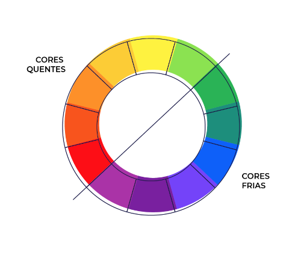

São todas as cores misturando as primárias e as secundárias.
Todas as cores terciárias devem ser ditas com o nome dos pais da mistura. Exemplo:
Notem que primeiro se diz a cor primária. Sendo Amarelo, Vermelho e Azul, começamos falando dessas cores.
E após as cores secundárias, que sempre ficam em segundo.

Você deve decidir uma paleta de cores, de 3 a 5 cores no máximo, desconsiderando o preto e o branco que já devem estar no seu site.
Cores Quentes dão uma harmonia de algo mais quente
Cores Frias dão uma harmonia de algo mais frio
As Cores Complementares são cores que contrastam entre si.
Para saber que cor mais contrasta com a outra basta olhar o círculo cromático e fazer uma linha contrária a cor escolhida.
Por exemplo: O roxo mais escuro contrasta com o amarelo;
O azul contrasta mais com o laranja;
São as cores mais próximas da cor príncipal que você quer usar. E as cores vizinhas à ela, ou as 2 que estão do lado dela no círculo cromático
Duas cores análogas, ou seja duas cores uma ao lado da outra, pula uma casa de cor para qualquer um dos lados.
Utilizam apenas uma cor mas mudam sua saturação e seu brilho. Criando assim várias tonalidades da mesma cor.